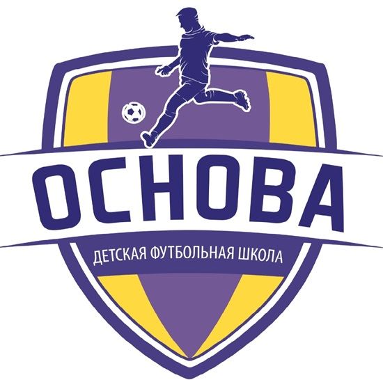

Методика футбольной школы “Основа” базируется на принципах индивидуального, группового и командного методов обучения, развития и воспитания ребёнка. Уделяется огромное внимание школьным успехам и всестороннему развитию каждого нашего воспитанника.
Все это необходимо для того, чтобы подготовить сильного и умного футболиста. Воспитание игрока - не только совершенствование его талантов на футбольном поле, но и формирование дисциплины и человеческих качеств.